Edukacja i świadomość
Prostym językiem wyjaśniamy, jak działa transformacja energetyczna i jak korzystać z programów wsparcia.
Fundacja • OZE • Edukacja • Partnerstwa
Fundacja Eco Poland łączy edukację, partnerstwa i rozwiązania OZE, aby pomagać mieszkańcom, inwestorom i lokalnym społecznościom podejmować odpowiedzialne decyzje energetyczne.
Od 2016 roku pomagamy zrozumieć programy wsparcia i przejść od pytań do działania.
Łączymy wiedzę fundacji z doświadczeniem partnerów rynku OZE i instytucji publicznych.
Wspieramy beneficjentów także wtedy, gdy potrzebna jest pomoc prawno-administracyjna.
O fundacji
Fundacja Eco Poland działa na styku ekologii, edukacji i wdrożeń odnawialnych źródeł energii. Pomagamy porządkować wiedzę, wskazujemy możliwe ścieżki działania i wspieramy osoby, które chcą inwestować odpowiedzialnie w bardziej zrównoważoną przyszłość.
Prostym językiem wyjaśniamy, jak działa transformacja energetyczna i jak korzystać z programów wsparcia.
Pompy ciepła, fotowoltaika, termomodernizacje i technologie, które wspierają mądrzejsze gospodarowanie energią.
Wizerunek fundacji wzmacniają współprace z producentami, wykonawcami i ekspertami działającymi na rynku OZE.
od tego roku fundacja rozwija działania wokół ekologii, edukacji i współpracy instytucjonalnej
uczestniczyliśmy w konsultacjach zmian programu Czyste Powietrze, w tym jego drugiej odsłony
prowadzimy od rozmowy i edukacji do wdrożenia, formalności i spraw beneficjentów
Program strategiczny
Wspieramy osoby, które chcą poprawić efektywność energetyczną domu, obniżyć koszty utrzymania i ograniczyć wpływ na środowisko. Pokazujemy, jak przejść przez proces spokojnie i krok po kroku, a w trudniejszych sprawach pomagamy również od strony prawno-administracyjnej.
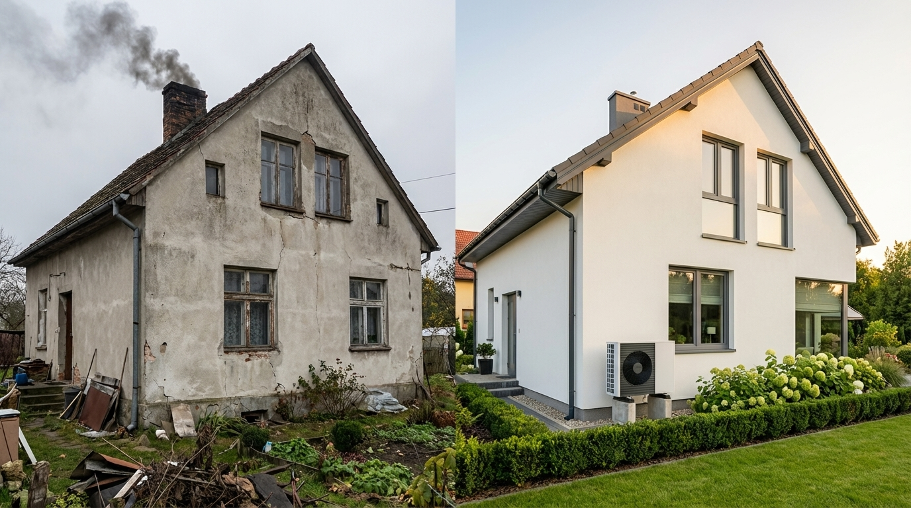
Jak wspieramy beneficjentów
od konsultacji programu po wsparcie w sprawach trudnych i spornychObszary działania
Nowoczesne systemy ogrzewania i efektywność energetyczna domów.
Rozwiązania PV jako realne wsparcie transformacji i oszczędności.
Lepsze wykorzystanie energii poprzez izolację i modernizację budynków.
Technologie wspierające lokalne źródła energii i niezależność.
Rozwiązania technologiczne, które pomagają lepiej zarządzać energią.
Partnerzy i wiarygodność
Od 2016 roku łączymy społeczną misję z praktycznym wsparciem dla beneficjentów, inwestorów i instytucji. Współpraca z partnerami rynku OZE, dialog z Ministerstwem Klimatu i Środowiska oraz relacje z NFOŚiGW i WFOŚiGW wzmacniają naszą skuteczność w obszarze programu Czyste Powietrze i szerzej rozumianej zielonej transformacji.
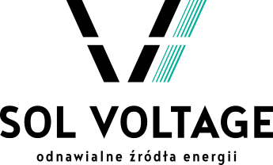
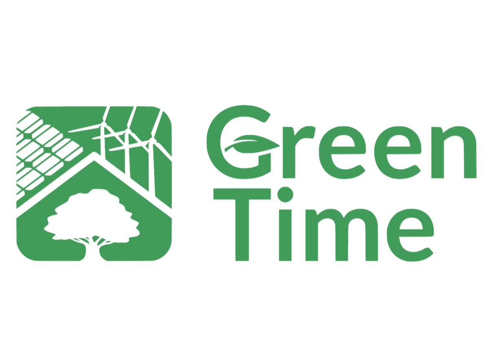
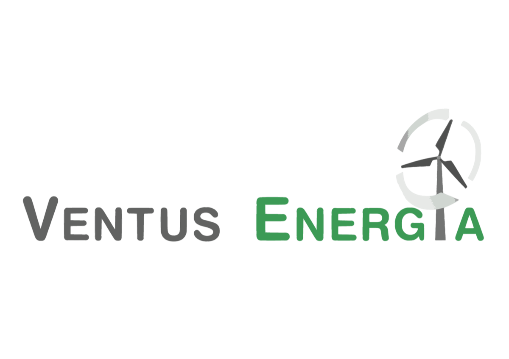
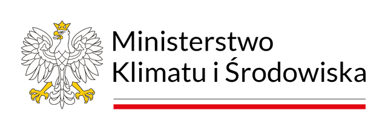
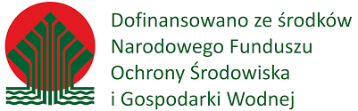
Ludzie fundacji
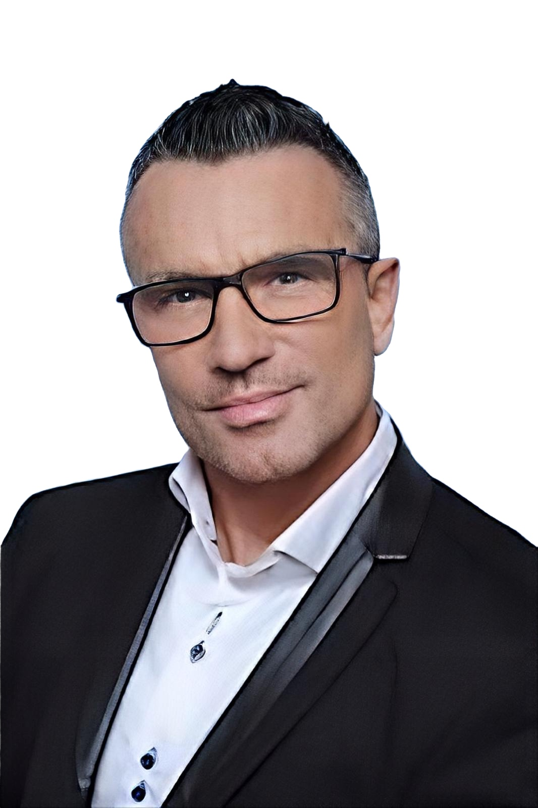
Strategia fundacji i relacje partnerskie.
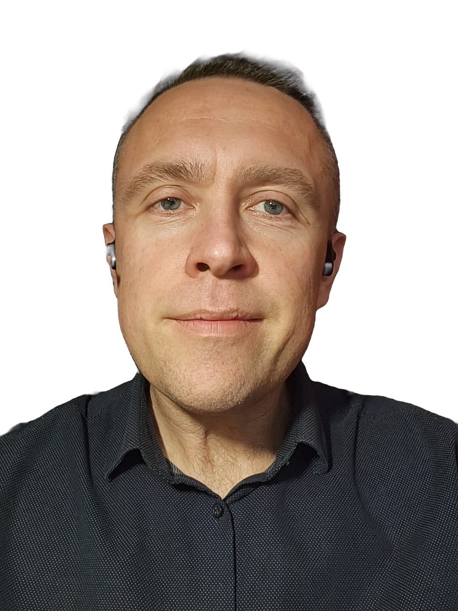
Koordynacja działań, komunikacja i rozwój inicjatyw.
Wsparcie prawne i prawno-administracyjne fundacji, w tym pomoc dla beneficjentów w trudnych i spornych sprawach.
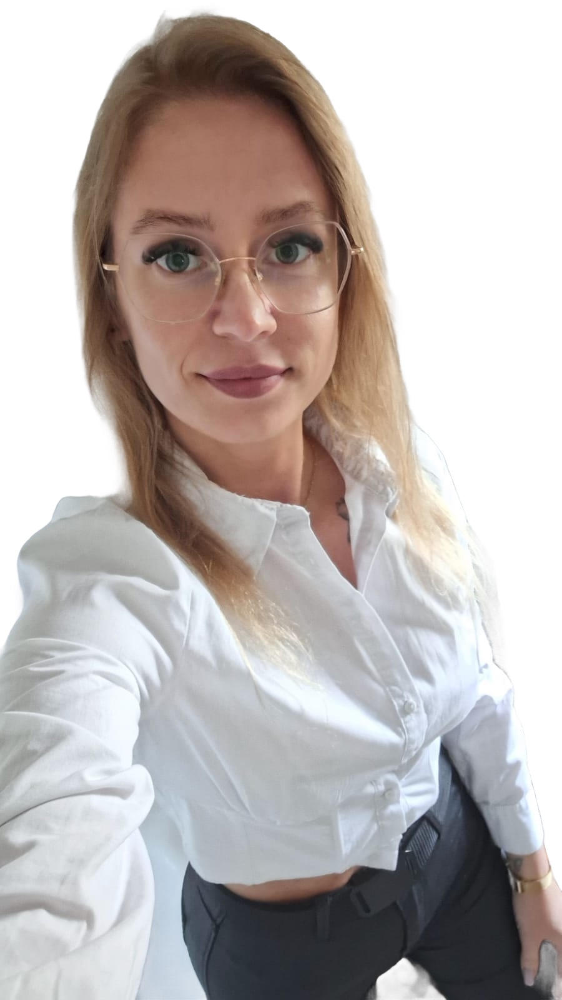
Umowy, administracja i sprawny obieg dokumentów wspierający codzienną pracę fundacji.
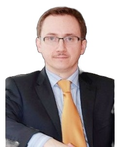
Wspólnik Fundacji, właściciel marki Ventus Energia oraz prezes zarządu spółki z o.o. Green Time.
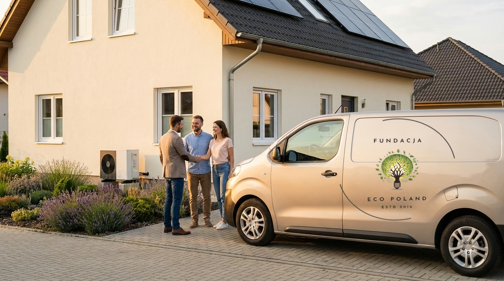
Od rozmowy do efektu
Fundacja Eco Poland pomaga przejść drogę od pierwszych pytań, przez programy wsparcia i wybór rozwiązań, aż do efektu, który naprawdę widać na posesji i czuć w codziennych kosztach.
Spokojnie przeprowadzimy Cię od pierwszego pytania do wdrożenia.
Porządkujemy potrzeby, możliwości i zakres inwestycji bez zbędnego chaosu.
Pomagamy zrozumieć programy, technologie i kolejne kroki prowadzące do wdrożenia.
Lepszy standard domu, większy komfort i transformacja, która ma sens ekonomiczny i środowiskowy.
Kontakt
Jeśli chcesz dowiedzieć się więcej o działaniach fundacji, programie Czyste Powietrze albo możliwościach wdrożenia OZE, jesteśmy do dyspozycji.